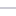

<!doctype html>
<html lang="en">
    <head>
        <meta charset="utf-8">
        <meta http-equiv="X-UA-Compatible" content="IE=edge">
        <meta name="viewport" content="initial-scale=1,user-scalable=no,maximum-scale=1,width=device-width">
        <meta name="mobile-web-app-capable" content="yes">
        <meta name="apple-mobile-web-app-capable" content="yes">
        <link rel="stylesheet" href="css/leaflet.css">
        <link rel="stylesheet" href="css/L.Control.Layers.Tree.css">
        <link rel="stylesheet" href="css/qgis2web.css">
        <link rel="stylesheet" href="css/fontawesome-all.min.css">
        <link rel="stylesheet" href="css/leaflet-control-geocoder.Geocoder.css">
        <style>
        html, body, #map {
            width: 100%;
            height: 100%;
            padding: 0;
            margin: 0;
        }
        </style>
        <title></title>
    </head>
    <body>
        <div id="map">
        </div>
        <script src="js/qgis2web_expressions.js"></script>
        <script src="js/leaflet.js"></script>
        <script src="js/L.Control.Layers.Tree.min.js"></script>
        <script src="js/leaflet.rotatedMarker.js"></script>
        <script src="js/leaflet.pattern.js"></script>
        <script src="js/leaflet-hash.js"></script>
        <script src="js/Autolinker.min.js"></script>
        <script src="js/rbush.min.js"></script>
        <script src="js/labelgun.min.js"></script>
        <script src="js/labels.js"></script>
        <script src="js/leaflet-control-geocoder.Geocoder.js"></script>
        <script src="data/KlasifikasiKesesuaianLahan_1.js"></script>
        <script src="data/JalanAksesibilitas_2.js"></script>
        <script>
        var map = L.map('map', {
            zoomControl:false, maxZoom:28, minZoom:1
        })
        var hash = new L.Hash(map);
        map.attributionControl.setPrefix('<a href="https://github.com/tomchadwin/qgis2web" target="_blank">qgis2web</a> &middot; <a href="https://leafletjs.com" title="A JS library for interactive maps">Leaflet</a> &middot; <a href="https://qgis.org">QGIS</a>');
        var autolinker = new Autolinker({truncate: {length: 30, location: 'smart'}});
        // remove popup's row if "visible-with-data"
        function removeEmptyRowsFromPopupContent(content, feature) {
         var tempDiv = document.createElement('div');
         tempDiv.innerHTML = content;
         var rows = tempDiv.querySelectorAll('tr');
         for (var i = 0; i < rows.length; i++) {
             var td = rows[i].querySelector('td.visible-with-data');
             var key = td ? td.id : '';
             if (td && td.classList.contains('visible-with-data') && feature.properties[key] == null) {
                 rows[i].parentNode.removeChild(rows[i]);
             }
         }
         return tempDiv.innerHTML;
        }
        // add class to format popup if it contains media
		function addClassToPopupIfMedia(content, popup) {
			var tempDiv = document.createElement('div');
			tempDiv.innerHTML = content;
			if (tempDiv.querySelector('td img')) {
				popup._contentNode.classList.add('media');
					// Delay to force the redraw
					setTimeout(function() {
						popup.update();
					}, 10);
			} else {
				popup._contentNode.classList.remove('media');
			}
		}
        var zoomControl = L.control.zoom({
            position: 'topleft'
        }).addTo(map);
        var bounds_group = new L.featureGroup([]);
        function setBounds() {
            if (bounds_group.getLayers().length) {
                map.fitBounds(bounds_group.getBounds());
            }
        }
        map.createPane('pane_Basemaps_0');
        map.getPane('pane_Basemaps_0').style.zIndex = 400;
        var layer_Basemaps_0 = L.tileLayer('https://mt1.google.com/vt/lyrs=m&x={x}&y={y}&z={z}', {
            pane: 'pane_Basemaps_0',
            opacity: 1.0,
            attribution: '',
            minZoom: 1,
            maxZoom: 28,
            minNativeZoom: 0,
            maxNativeZoom: 19
        });
        layer_Basemaps_0;
        map.addLayer(layer_Basemaps_0);
        function pop_KlasifikasiKesesuaianLahan_1(feature, layer) {
            var popupContent = '<table>\
                    <tr>\
                        <td colspan="2"><strong>Ket</strong><br />' + (feature.properties['Ket'] !== null ? autolinker.link(feature.properties['Ket'].toLocaleString()) : '') + '</td>\
                    </tr>\
                    <tr>\
                        <td class="visible-with-data" id="Luas (Ha)"colspan="2"><strong>Luas (Ha)</strong><br />' + (feature.properties['Luas (Ha)'] !== null ? autolinker.link(feature.properties['Luas (Ha)'].toLocaleString()) : '') + '</td>\
                    </tr>\
                    <tr>\
                        <td class="visible-with-data" id="Kemiringan"colspan="2"><strong>Kemiringan</strong><br />' + (feature.properties['Kemiringan'] !== null ? autolinker.link(feature.properties['Kemiringan'].toLocaleString()) : '') + '</td>\
                    </tr>\
                    <tr>\
                        <td class="visible-with-data" id="Kerentanan"colspan="2"><strong>Kerentanan</strong><br />' + (feature.properties['Kerentanan'] !== null ? autolinker.link(feature.properties['Kerentanan'].toLocaleString()) : '') + '</td>\
                    </tr>\
                    <tr>\
                        <td class="visible-with-data" id="Access"colspan="2"><strong>Access</strong><br />' + (feature.properties['Access'] !== null ? autolinker.link(feature.properties['Access'].toLocaleString()) : '') + '</td>\
                    </tr>\
                </table>';
            var content = removeEmptyRowsFromPopupContent(popupContent, feature);
			layer.on('popupopen', function(e) {
				addClassToPopupIfMedia(content, e.popup);
			});
			layer.bindPopup(content, { maxHeight: 400 });
        }

        function style_KlasifikasiKesesuaianLahan_1_0(feature) {
            switch(String(feature.properties['Ket'])) {
                case 'Tidak Sesuai (N)':
                    return {
                pane: 'pane_KlasifikasiKesesuaianLahan_1',
                stroke: false, 
                fill: true,
                fillOpacity: 1,
                fillColor: 'rgba(215,25,28,1.0)',
                interactive: true,
            }
                    break;
                case 'Kesesuaian Rendah':
                    return {
                pane: 'pane_KlasifikasiKesesuaianLahan_1',
                stroke: false, 
                fill: true,
                fillOpacity: 1,
                fillColor: 'rgba(254,201,129,1.0)',
                interactive: true,
            }
                    break;
                case 'Kesesuaian Sedang':
                    return {
                pane: 'pane_KlasifikasiKesesuaianLahan_1',
                stroke: false, 
                fill: true,
                fillOpacity: 1,
                fillColor: 'rgba(196,230,135,1.0)',
                interactive: true,
            }
                    break;
                case 'Kesesuaian Tinggi':
                    return {
                pane: 'pane_KlasifikasiKesesuaianLahan_1',
                stroke: false, 
                fill: true,
                fillOpacity: 1,
                fillColor: 'rgba(26,150,65,1.0)',
                interactive: true,
            }
                    break;
            }
        }
        map.createPane('pane_KlasifikasiKesesuaianLahan_1');
        map.getPane('pane_KlasifikasiKesesuaianLahan_1').style.zIndex = 401;
        map.getPane('pane_KlasifikasiKesesuaianLahan_1').style['mix-blend-mode'] = 'normal';
        var layer_KlasifikasiKesesuaianLahan_1 = new L.geoJson(json_KlasifikasiKesesuaianLahan_1, {
            attribution: '',
            interactive: true,
            dataVar: 'json_KlasifikasiKesesuaianLahan_1',
            layerName: 'layer_KlasifikasiKesesuaianLahan_1',
            pane: 'pane_KlasifikasiKesesuaianLahan_1',
            onEachFeature: pop_KlasifikasiKesesuaianLahan_1,
            style: style_KlasifikasiKesesuaianLahan_1_0,
        });
        bounds_group.addLayer(layer_KlasifikasiKesesuaianLahan_1);
        map.addLayer(layer_KlasifikasiKesesuaianLahan_1);
        function pop_JalanAksesibilitas_2(feature, layer) {
            var popupContent = '<table>\
                </table>';
            var content = removeEmptyRowsFromPopupContent(popupContent, feature);
			layer.on('popupopen', function(e) {
				addClassToPopupIfMedia(content, e.popup);
			});
			layer.bindPopup(content, { maxHeight: 400 });
        }

        function style_JalanAksesibilitas_2_0() {
            return {
                pane: 'pane_JalanAksesibilitas_2',
                opacity: 1,
                color: 'rgba(151,148,168,1.0)',
                dashArray: '',
                lineCap: 'square',
                lineJoin: 'bevel',
                weight: 1.0,
                fillOpacity: 0,
                interactive: true,
            }
        }
        map.createPane('pane_JalanAksesibilitas_2');
        map.getPane('pane_JalanAksesibilitas_2').style.zIndex = 402;
        map.getPane('pane_JalanAksesibilitas_2').style['mix-blend-mode'] = 'normal';
        var layer_JalanAksesibilitas_2 = new L.geoJson(json_JalanAksesibilitas_2, {
            attribution: '',
            interactive: true,
            dataVar: 'json_JalanAksesibilitas_2',
            layerName: 'layer_JalanAksesibilitas_2',
            pane: 'pane_JalanAksesibilitas_2',
            onEachFeature: pop_JalanAksesibilitas_2,
            style: style_JalanAksesibilitas_2_0,
        });
        bounds_group.addLayer(layer_JalanAksesibilitas_2);
        map.addLayer(layer_JalanAksesibilitas_2);
        var osmGeocoder = new L.Control.Geocoder({
            collapsed: true,
            position: 'topleft',
            text: 'Search',
            title: 'Testing'
        }).addTo(map);
        document.getElementsByClassName('leaflet-control-geocoder-icon')[0]
        .className += ' fa fa-search';
        document.getElementsByClassName('leaflet-control-geocoder-icon')[0]
        .title += 'Search for a place';
        var baseMaps = {};
        var overlaysTree = [
            {label: ' Jalan Aksesibilitas', layer: layer_JalanAksesibilitas_2},
            {label: 'Klasifikasi Kesesuaian Lahan <br /><table><tr><td style="text-align: center;"></td><td>Tidak Sesuai (N)</td></tr><tr><td style="text-align: center;"></td><td>Kesesuaian Rendah</td></tr><tr><td style="text-align: center;"></td><td>Kesesuaian Sedang</td></tr><tr><td style="text-align: center;"></td><td>Kesesuaian Tinggi</td></tr></table>', layer: layer_KlasifikasiKesesuaianLahan_1},
            {label: "Basemaps", layer: layer_Basemaps_0},]
        var lay = L.control.layers.tree(null, overlaysTree,{
            //namedToggle: true,
            //selectorBack: false,
            //closedSymbol: '&#8862; &#x1f5c0;',
            //openedSymbol: '&#8863; &#x1f5c1;',
            //collapseAll: 'Collapse all',
            //expandAll: 'Expand all',
            collapsed: false, 
        });
        lay.addTo(map);
        setBounds();
        </script>
    </body>
</html>
